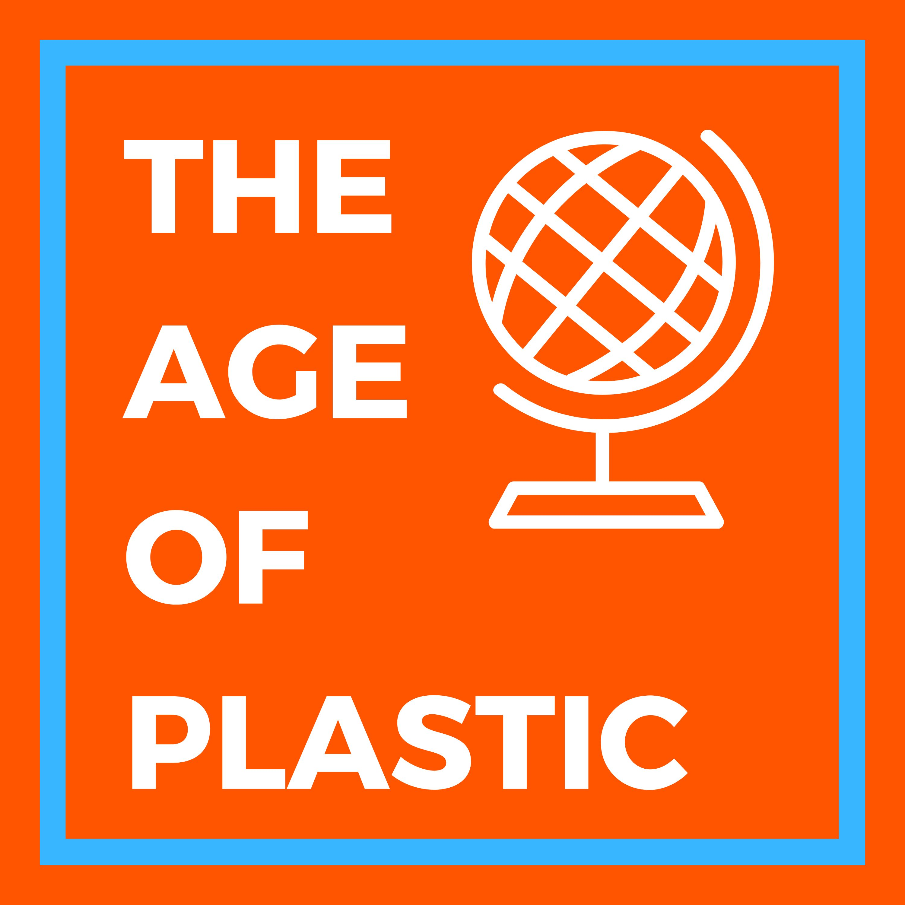

We live in an age of plastics. Our world is littered with plastic containers and products. It is so prevalent that our ecosystem is changing rapidly from the plastics we use. But how did plastic become so widespread without being noticed? How did we become
so consumed by an ecosystem destroyer? When did this all start?

The age of plastics is the creation and invention of plastic containers and other objects. This time period evolved into what we know now as our modern era. Some argue that the earliest plastics that were introduced to the public go as far back as 1898,
when polyethylene was the ubiquitous plastic. However, the turning point of plastics was during the 1960’s. Prior to this decade, scientists, Erhard Holzkamp and Karl Ziegler of Kaiser Wilhelm Institute, have figured out how to create high-density
polyethylene. The high-density polyethylene is used to make basic items like plastic bags. This revolutionized the world.
In 1960, consumerism was popular and a Swedish company, Celloplast, was interested in vending items without denting their wages. They aimed to package their items with plastic and make a bag that was dense enough to hold heavy items, but were also able
to fold as thin as paper. This lead to the creation of the plastic bag. Originally named the t-shirt plastic bag, it eventually spread to other countries as a way to sell items cheap. With these events, the plastic age was in motion and eventually
led to the world we live in today. Today, we use plastics for almost everything from bottles to containers. For 59 years, plastic has dominated the manufacturing processes: being shipped to supermarkets, put in cars, and used for silverware. Due
to its abundance, people are willing to discard plastic items more often. This is a problem because plastic isn’t decomposable and, when exposed to the environment, is lethal to most animals. They cause choking hazards for sea creatures and mammals
alike. This is the age we live in today, the age of plastics.